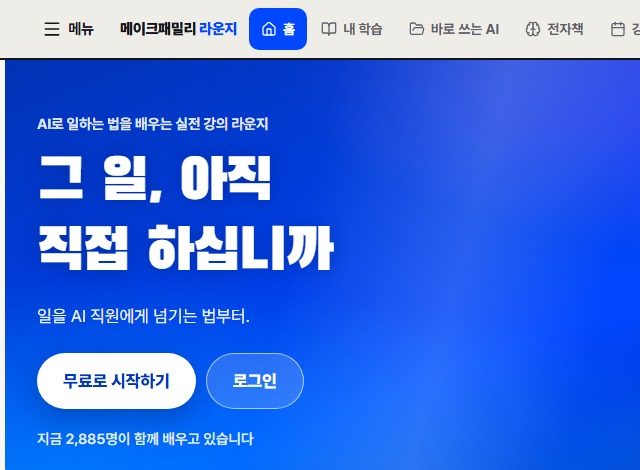

좋은 상품인데
왜 끝까지 안 읽을까요?
설명에도
순서가 있습니다

고객이 궁금해하는 순서대로
첫 문장부터 구매 버튼까지 씁니다.
상품 소개를
내 이야기로
온천수 성분의 촉촉한 수분크림
다시 당기나요?
아침에는 괜찮았는데
오후엔 다시 건조하다면
온천수 성분과 가벼운 제형으로
매일 쓰기 좋은 보습 기준을 잡습니다.
원문 9장 수분크림 사례를 상세페이지 화면으로 재구성했습니다.
실제 판매 상품이나 효능을 검증한 화면은 아닙니다.
첫 화면에서
답해야 할 질문
누구에게 필요한가요?
대상 → 문제 → 결과 → 방식 → 행동.
멋진 한 문장을 찾기 전에 이 다섯 칸부터 채웁니다.
어떤 장면에서 불편한가요?
“피부 고민 해결”보다 “오후에 다시 당기는 피부”처럼 고객이 겪는 장면을 적습니다.
비교할 기준을
먼저 알려주세요
가격은 얼마지? 디자인은 예쁜가?
향이 덜 빠질까?
원두 보관통을 고를 때
먼저 볼 것
매일 여닫을 때 향이 얼마나 덜 빠지는지.
기준을 세운 다음 상품의 구조와 사용 방식을 설명합니다.
원문 원두 보관통 사례를 요약한 예시 화면입니다.
고객의 질문을
한 장씩 풀어줍니다
끝까지 썼다면, 이탈 점검
버튼을 누르기 전에 남는 의문은 없는지.
신청 뒤 무슨 일이 생기는지까지 읽어봅니다.
읽는 동안
내 원고를 만듭니다
내 상품의 히어로 초안
대상과 문제를 적고 결과·방식·행동을 붙입니다. 장마다 실습하며 자신의 문장으로 바꿔봅니다.
선택 기준과 제안 블록
고객이 기존에 보던 기준을 적고 내 상품을 판단할 기준을 정리합니다.
버튼과 신청 이후 안내
근거·가격·혜택을 연결하고 신청 뒤 안내 문장까지 씁니다.
상품을 팔아온 기록,
숫자로 확인하세요.
(주)메이크프렌즈
연간 매출
출처: (주)메이크프렌즈 월별 매출 원장.
각 연도 1~12월 합계입니다.

메이크패밀리 네이버 카페 westudyssat 회원수.
2026.09.10 캡처 기준.
함께 배우는 사람

메이크패밀리 라운지 홈에 표시된 인원.
2026.09.10 첫 화면 캡처 기준.
원고를 쓸 때
다시 꺼내보세요
AI에는 책 파일과 내 상황을 함께 줍니다.
초안을 받은 뒤 실제 상품 정보와 대조합니다.
읽기 전에
궁금한 것들
랜딩페이지의 정석
결제한 이메일로 라운지에 로그인해
책을 확인하세요.
읽기 전 확인해주세요
본문을 바탕으로 만든 설명 화면은 이해를 돕는 예시입니다. 개인의 실행 환경과 적용 방식에 따라 결과는 달라집니다.
디지털 파일 상품이라 결제 후 환불되지 않아요.